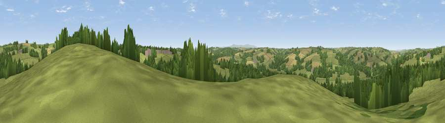

Viewpoint near Chulmleigh
#21376 in England · top 34% of its area beats it · near ChulmleighThe view, rendered

A 360° render of this exact spot computed from the terrain model, tree cover and land cover — summer colours, afternoon light, calibrated against photographs of famous viewpoints. Real trees, hedges and buildings will differ in detail.
The panorama
Grey silhouette: terrain skyline in each direction (720 bearings, Earth curvature and refraction included). Dashed green: skyline with trees (+15 m) and buildings (+8 m) as obstacles. Blue strip: how far the ground is visible on each bearing.
Where the view opens
Wedge length = distance to the farthest visible ground on that bearing (vegetation-aware). Rings at 10, 25 and 50 km.
What fills the view
57% grassland · 31% woodland · 11% cropland · 1% built-up
Angular shares of the visible panorama (visual magnitude), not map area. Landscape diversity 0.42 (0–1 Shannon).
Key numbers
More beautiful places nearby
The staircase of upgrades: each row has a higher view potential than everything closer. Driving times are estimates from straight-line distance, calibrated against real road routing — check an actual route before setting out.
| Place | Direction | Drive | Score |
|---|---|---|---|
| Viewpoint near Kings Nympton | NNW · 2 km | ~5 min | 56.8 |
| Viewpoint near Kings Nympton | NNE · 2 km | ~5 min | 58.3 |
| Viewpoint near Chulmleigh | ENE · 2 km | ~6 min | 62.4 |
| Viewpoint near Burrington | NW · 5 km | ~11 min | 66.4 |
| Viewpoint near Stags Head | N · 14 km | ~25 min | 68.1 |
| Yollacombe Hill | NNW · 14 km | ~26 min | 70.2 |
| Viewpoint near High Bullen | WNW · 16 km | ~29 min | 71.2 |
| Viewpoint near Landkey | NNW · 16 km | ~29 min | 74.0 |
50.91897, -3.88674 · source: screening · position refined by local search. Computed location — check access rights before visiting.